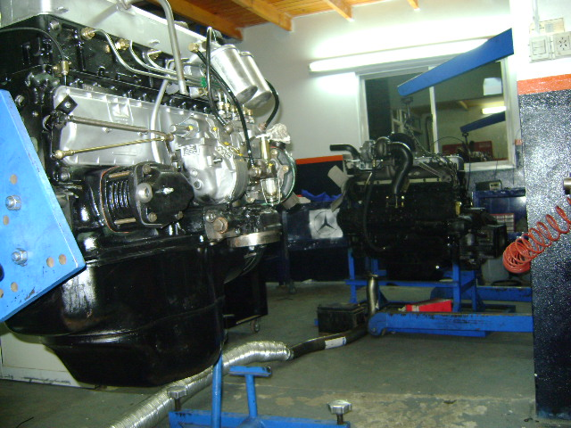

sobre nosotros
Somos una empresa familiar con más de 30 años en el rubro, comprometidos con brindar soluciones efectivas y de alta calidad a quienes dependen de sus camiones para llevar adelante sus negocios. Fundada por Miguel Angel Contreras en 1988, nuestra empresa nació de la pasión por el mundo automotor y del deseo de ofrecer un servicio confiable y cercano en una industria tan exigente como la del transporte.
Con el paso de los años, hemos pasado de atender a unos pocos clientes en un pequeño taller a convertirnos en uno de los proveedores más completos y especializados en repuestos y accesorios para camiones en la región. Esta trayectoria ha sido posible gracias a los valores que siempre nos han caracterizado: honestidad, trabajo en equipo y un compromiso inquebrantable con la satisfacción de nuestros clientes.
Hoy, en Contreras Repuestos, seguimos siendo una empresa familiar, pero con un equipo en crecimiento que comparte nuestros valores y nuestra pasión por lo que hacemos. Cada miembro de nuestro equipo es fundamental para garantizar que los productos y servicios que ofrecemos cumplan con los más altos estándares de calidad, y estamos orgullosos de acompañar a nuestros clientes en cada kilómetro de sus recorridos.